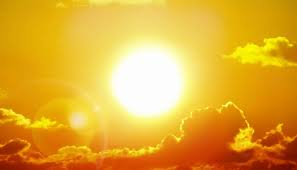
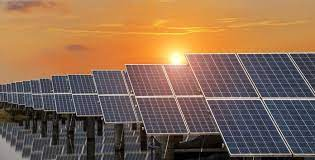
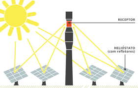

 A energia solar é proveniente da luz e do calor obtido pelo sol, sendo considerado umas das energias mais limpas como também tendo uma capacidade muito promissora em obtenção energética. Existem vários meios tecnológicos de se obter energia elétrica ou térmica esses são: painéis fotovoltaicos, usinas heliotérmicas e os aquecedores solares que só obtém energia térmica. Obtendo esses meios tecnológicos nós somos capazes de obter a energia solar e transformá-la em energia elétrica e térmica de forma mais benéfica para o meio ambiente e o ser humano.
Tipos de energia solar
Energia solar fotovoltaica

Essa energia é exatamente a conversão da radiação solar em energia elétrica.Isso acontece por causa das células fotovoltaicas, compostas por material semicondutor, geralmente o silício. É constituído por painéis, módulos e outros vários equipamentos elétricos, o modo voltaico na exige alta radiação para funcionar. Porém eles dependem da densidade das nuvens, quanto menos nuvens maior será a produção de eletricidade.
Energia solar heliotérmica
Neste sistema a energia solar é transformada em calor, aquecendo, na maior parte, água de residências, hotéis e clubes. Isso ocorre devido a espelhos que aquecem em um único ponto, onde podemos achar o receptor. O receptor é constituído por um líquido responsável por armazenar calor, que ao aquecer cria-se o vapor. Esse vapor movimenta as turbinas provocando o acionamento dos geradores, que acabam produzindo a energia elétrica.
Se você quiser saber mais sobre este tipo de energia ou quer ir mais a fundo sobre este assunto, confira este vídeo que deixamos disponibilizados para você: